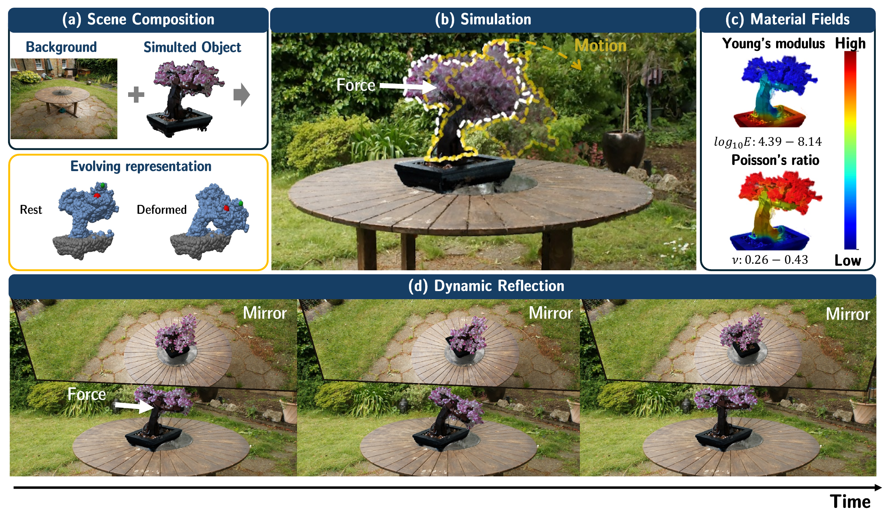
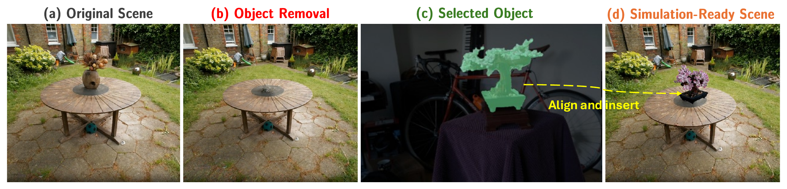
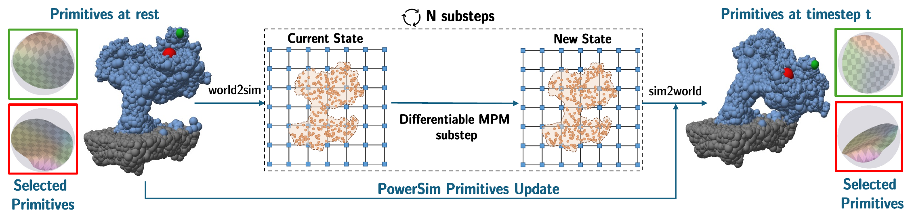
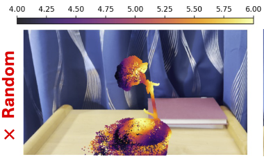
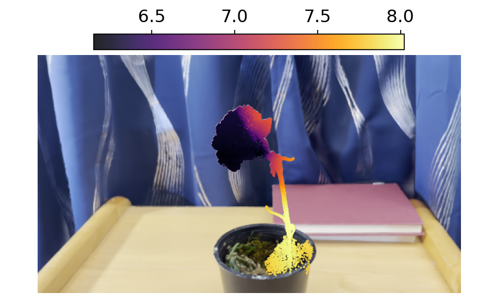
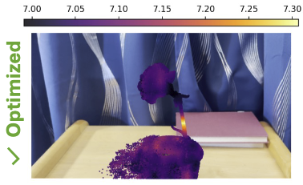

PAC-NeRF
PhysGaussian
PowerSim

Material Field

Simulation
Material Field

Simulation
Material Field

Simulation
Collision
Compression
Elasticity
Granular
Mic Drop
Telephone Swinging
Bonsai Garden with Mirror Reflection
Multi-Physics Cafeteria with Mirror Reflection
Dynamic reconstruction on the GSO drop benchmark. Panels left to right: PAC-NeRF, PhysDreamer, Ours, Reference.
Mario
Bus
Under large twisting deformations, updating both the dipole frames and appearance directions helps preserve the object's geometry and appearance. We compare the full update with variants that hold either component fixed, and with PhysGaussian.
PowerSim
Fixed Dipole Plane
Fixed Detail Site Axis
PhysGaussian